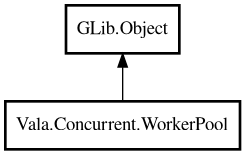

WorkerPool
Object Hierarchy:

Description:
public class WorkerPool : Object
Fixed-size worker pool for executing tasks concurrently.
WorkerPool manages a pool of worker threads and a task queue. Tasks submitted via
submitInt,
submitString,
execute etc. are queued and processed by the next available worker
thread.
Example:
var pool = WorkerPool.withDefault ();
pool.execute (() => {
// background work
});
pool.shutdown ();
Example with return value:
var pool = new WorkerPool (4);
int result = pool.submitInt (() => { return 42; }).await ();
pool.shutdown ();
Content:
Static methods:
Creation methods:
Methods:
- public int activeCount ()
Returns the number of currently active (executing) tasks.
- public void execute (owned VoidTaskFunc task)
Executes a void task in the thread pool.
- public bool isShutdown ()
Returns whether the pool has been shut down.
- public int poolSize ()
Returns the number of worker threads in this pool.
- public int queueSize ()
Returns the number of tasks waiting in the queue.
- public void shutdown ()
Signals shutdown and waits for all queued tasks to complete. No new
tasks can be submitted after calling this method.
- public PromiseBool submitBool (owned TaskFunc<bool> task)
Submits a task that returns a bool and returns a PromiseBool
representing the pending result.
- public PromiseDouble submitDouble (owned TaskFunc<double?> task)
Submits a task that returns a double and returns a PromiseDouble
representing the pending result.
- public PromiseInt submitInt (owned TaskFunc<int> task)
Submits a task that returns an int and returns a PromiseInt
representing the pending result.
- public PromiseString submitString (owned TaskFunc<string> task)
Submits a task that returns a string and returns a PromiseString
representing the pending result.
Inherited Members:
All known members inherited from class GLib.Object
- @get
- @new
- @ref
- @set
- add_toggle_ref
- add_weak_pointer
- bind_property
- connect
- constructed
- disconnect
- dispose
- dup_data
- dup_qdata
- force_floating
- freeze_notify
- get_class
- get_data
- get_property
- get_qdata
- get_type
- getv
- interface_find_property
- interface_install_property
- interface_list_properties
- is_floating
- new_valist
- new_with_properties
- newv
- notify
- notify_property
- ref_count
- ref_sink
- remove_toggle_ref
- remove_weak_pointer
- replace_data
- replace_qdata
- set_data
- set_data_full
- set_property
- set_qdata
- set_qdata_full
- set_valist
- setv
- steal_data
- steal_qdata
- thaw_notify
- unref
- watch_closure
- weak_ref
- weak_unref